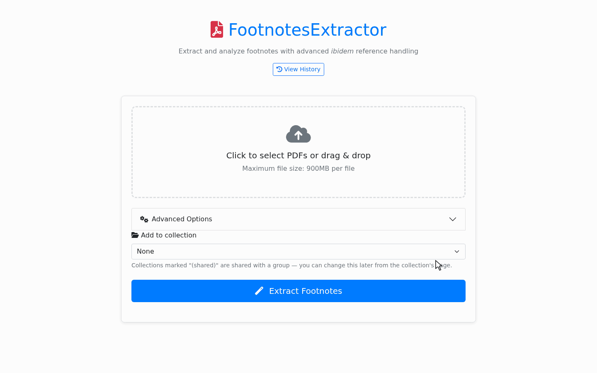
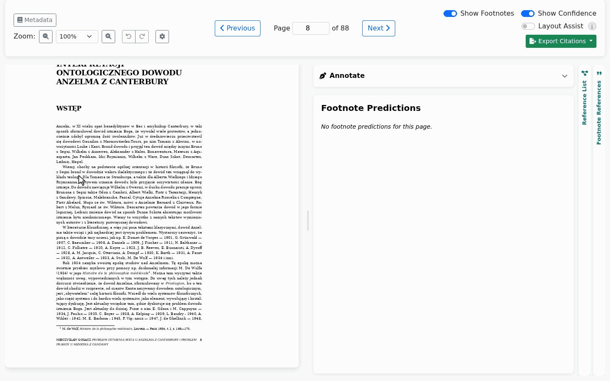
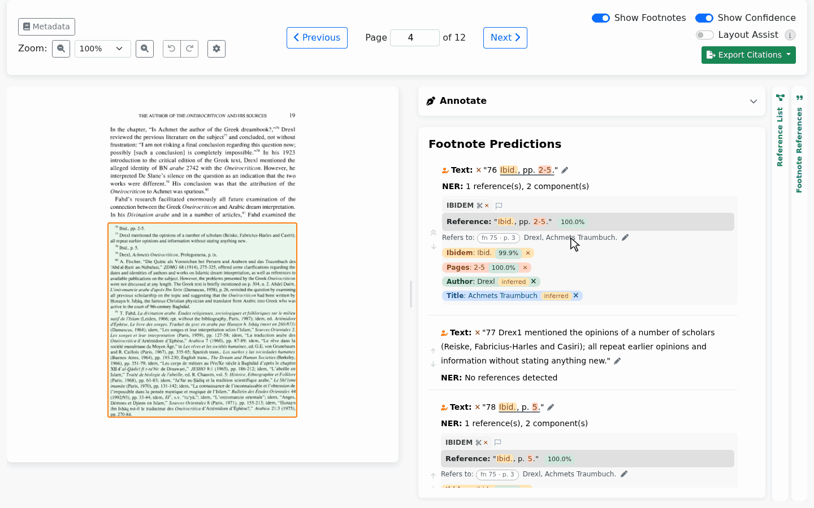
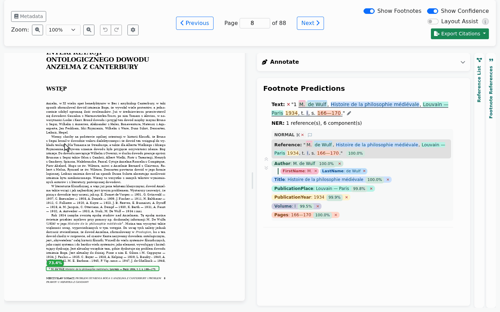

Citation indexes read reference lists. Books cite in footnotes.
FootnotesExtractor reads the footnotes of a scholarly book, born-digital or scanned, finds every reference in them, tags its parts and hands them to you as data you can count, link and export. It runs on your own server.
A reference, tagged
1 M. de Wulf, Histoire de la philosophie médiévale, Louvain — Paris 1934, t. I, s. 166—170.1
- Author
- M. de Wulf: first name M., last name de Wulf
- Title
- Histoire de la philosophie médiévale
- Place
- Louvain — Paris
- Year
- 1934
- Volume
- I
- Pages
- 166—170
An ibid., resolved
76 Ibid., pp. 2-5.2
- Refers to
- footnote 75, on page 3
- Author
- Drexl taken from footnote 75
- Title
- Achmets Traumbuch taken from footnote 75
- Pages
- 2-5
How you use it
1. Upload
Drop one or more PDFs on the start page, born-digital or scanned, up to 200 MB each. One upload can hold up to 900 PDFs and 850 MB together. When processing ends, the book opens in the viewer with every footnote boxed, read and tagged.

2. Correct what is wrong
Press B and draw a box around a footnote the detector missed: about a second and a half later it is read and tagged. Click a box to change it, use the pencil to fix a footnote's text, split or merge footnotes, relabel any part, and undo any of it.
Switch on Layout Assist for suggestions. It learns each book's layout and citation style and points out what may be wrong. You decide what changes.

3. Check back-references
Each ibid. and op. cit. shows the work it refers to. When a rule picks the wrong one, point it to the right one: it takes over that work's author, title and year, and the whole book is resolved again.

4. Export
Use the Export Citations button: BibTeX, APA, Chicago, MLA, the references as printed, or JSON and CSV with everything. Each cited work appears once, with every place it is cited: PDF page, footnote number and the reference as printed.

An administrator switches optional tools on per user in Admin → Users, such as linking references to a reference list given as BibTeX.
How it works
- Find footnotesA detector finds the footnote areas on each page image.
- Read themText comes from the PDF's text layer or, for scans, from OCR.
- Split themRules follow the footnote numbers, cut each area into single footnotes and rejoin notes that run over a page.
- Parse referencesTransformer models find each reference and tag its parts, down to first and last names.
- ResolveRules link ibid. and op. cit. to the work they refer to, each type by its own rule.
Install
Minimum requirements:
| With OCR (scans too) | |
|---|---|
| GPU memory | 10 GB |
| CPU | 4 cores |
| RAM | 12 GB |
| Disk | 6 GB |
| Speed, few footnotes | 0.3 s per page |
You need Linux, Python 3.10 and an NVIDIA GPU with drivers for CUDA 12.4.
git clone https://github.com/FootnotesExtractor/FootnotesExtractor.git
cd FootnotesExtractor
python3 -m venv venv
source venv/bin/activate
pip install -r requirements.txt
python setup_models.py # about 4 GB
FOOTNOTES_INSECURE_COOKIES=1 python wsgi.py --host 127.0.0.1 # http://127.0.0.1:5002Surya downloads its own OCR weights (about 2.4 GB) the first time it runs. FOOTNOTES_INSECURE_COOKIES=1 lets you log in over plain HTTP on your own machine; never set it on a server, where you should use HTTPS instead. The first account you register becomes the administrator, who creates all further accounts in Admin → Users. For a server, see the deployment notes.
Use it over HTTP
Everything the browser does is also available as an API. Create a key on your Profile page, then:
import time
import requests
BASE = "http://127.0.0.1:5002"
HEADERS = {"X-API-Key": "fnk_..."}
with open("book.pdf", "rb") as f:
job = requests.post(f"{BASE}/api/v1/documents", headers=HEADERS,
files={"file": ("book.pdf", f, "application/pdf")}).json()["job_id"]
def status():
return requests.get(f"{BASE}/api/v1/documents/{job}", headers=HEADERS).json()["status"]
while status() not in ("completed", "error"):
time.sleep(5)
bib = requests.get(f"{BASE}/download/{job}", headers=HEADERS, params={"format": "bibtex_expanded"})
with open("book.bib", "wb") as f:
f.write(bib.content)The API reference covers editing, groups, collections and the other export formats.
- M. Gogacz, Problem istnienia Boga u Anzelma z Canterbury i problem prawdy u Henryka z Gandawy, Katolicki Uniwersytet Lubelski, 1961 (CC BY-SA).
- Maria V. Mavroudi, A Byzantine Book on Dream Interpretation, Brill, 2002, doi:10.1163/9789004473461 (CC BY).